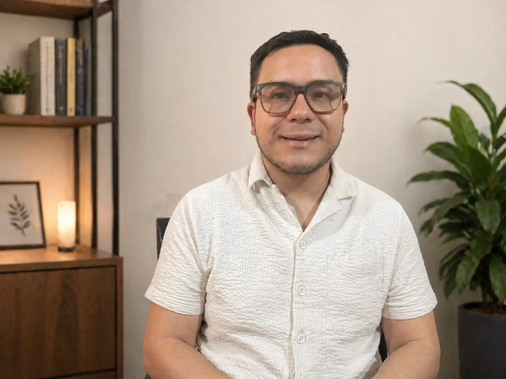

Psicólogo Clínico en Quito
Sanar es un proceso, no un destino.
Detrás del malestar, la ira y el sufrimiento suele haber una historia. Juntos podemos comprenderla para avanzar y sanar.
Detrás del malestar, la ira y el sufrimiento suele haber una historia. Juntos podemos comprenderla para avanzar y sanar.
"Espacio seguro, ético y confidencial para acompañarte en tu proceso hacia el bienestar." — Psic. Josué Berrú Negrete

Registro MSP Ecuador: 1724342843
• Soy Psicólogo Clínico, graduado por la Pontificia Universidad Católica del Ecuador (2019), y Máster en Ciencias Sociales, Género y Desarrollo por FLACSO Ecuador (2023).
• Cuento con más de cinco años de experiencia acompañando procesos psicoterapéuticos con adultos y adolescentes desde una orientación psicodinámica. A lo largo de mi trayectoria también he trabajado en contextos educativos, asistencia humanitaria, movilidad humana y organizaciones internacionales, además de acompañar a población LGBTIQ+.
• Estas experiencias me han permitido desarrollar una mirada amplia e integradora sobre el malestar psicológico, comprendiendo cómo la historia personal, las emociones, los vínculos y el contexto social influyen en lo que hoy te ocurre. Mi objetivo es ofrecerte un espacio profesional, humano y libre de juicios, donde podamos trabajar juntos hacia cambios profundos y sostenibles.
Acompañamiento psicológico para adultos y adolescentes desde una mirada profunda, ética y profesional, en un espacio seguro y libre de prejuicios.
La American Psychological Association describe la psicoterapia psicodinámica como un enfoque orientado a comprender cómo patrones emocionales, relaciones pasadas y experiencias tempranas influyen en la vida actual. Su objetivo no es solo aliviar síntomas, sino promover cambios profundos y sostenibles.
En esta línea, Jonathan Shedler, en su artículo The Efficacy of Psychodynamic Psychotherapy (2010), concluyó que la evidencia empírica respalda su eficacia, con resultados comparables a otras terapias, observando que muchos pacientes continúan mejorando incluso después de finalizar el tratamiento.
Sesiones virtuales con la misma calidad y confidencialidad que el formato presencial. Ideal para quienes prefieren la comodidad de su hogar o tienen movilidad limitada.
Herramientas y guías visuales para ayudarte a comprender mejor tus procesos emocionales.

Identifica y comprende los mecanismos de la ansiedad para recuperar tu equilibrio.

Reconoce señales de agotamiento antes de que afecten tu salud física y mental.

Aprende a diferenciar el cansancio físico de la saturación emocional profunda.
Un proceso estructurado pensado para tu bienestar y comodidad.
Escribes o llamas. Conversamos brevemente sobre lo que necesitas y resolvemos dudas.
En la primera sesión exploramos tu historia y definimos juntos los objetivos terapéuticos.
Trabajamos de manera regular para profundizar en tu proceso y promover el cambio duradero.
Atención presencial en instalaciones cómodas y accesibles, con la posibilidad de agendar sesiones online.
Av. Brasil y Pasaje Taborda N39-222, Quito, Ecuador
Atención Presencial y Virtual (Online)
+593 987 542217
Mapa interactivo de Google Maps
Abrir ubicaciónResolvemos las dudas más comunes antes de tu primera sesión.
Sí. La confidencialidad es un principio ético fundamental de mi práctica profesional. Todo lo compartido en sesión y la información relacionada con tu proceso se maneja con respeto, resguardo y criterio profesional.
Al iniciar el acompañamiento recibirás un consentimiento informado donde se explican claramente los alcances de la confidencialidad, el manejo de datos y las excepciones contempladas por la ética profesional y la normativa vigente, especialmente en situaciones donde exista riesgo significativo para tu integridad o la de terceros. Mi compromiso es actuar siempre con transparencia y priorizando tu bienestar.
La experiencia de quienes han transitado este proceso de sanación.
"Encontrar un espacio tan ético y libre de juicios fue fundamental para mi proceso. Josué es un profesional excepcional que me ayudó a entender patrones que no veía."
"Excelente acompañamiento. Su enfoque psicodinámico me permitió profundizar en temas personales de una manera segura y contenida. Altamente recomendado."
"Un espacio donde realmente me sentí bienvenido y escuchado. La profundidad con la que trabajamos los vínculos y el contexto social marcó la diferencia."
Agendar una cita es sencillo. Escríbeme directamente por WhatsApp o llámame.
Escribir por WhatsAppElige el día y la hora que mejor se adapte a tu disponibilidad. Recibirás una confirmación inmediata en tu correo.
¿Prefieres agendar de forma personal o tienes dudas? Escríbeme por WhatsApp